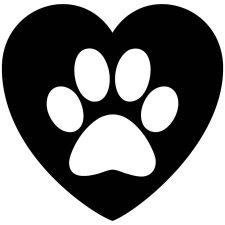

About Us

At YNG Animal Health, we have a 10 year history of connecting, caring and curing your companion animals.Bound by an organizational culture - one that fosters respect and compassion to all animals and their human caretakers - YNG Animal Health sets itself apart from other veterinary services in the country by treating your companion animals with the kind of care, love and kindness we show towards our own fur babies.
Vision
To foster a world where the symbiotic bond between humans and animals is valued and celebrated.
Misson
To continue to be the preferred clinical destination for pets. We will accomplish our mission by:
Providing sensitive care in a clinic purposely designed to minimise pain and stree of pets.
Staffing our teams with qualified, experienced, and compassionate doctors and nurses.